被打断的未来：疫情那么严峻，我还能找到工作吗？
原文链接 备份链接 摘要：本文为“2020，我们的生活在继续”征文大赛的投稿作品。2020年，本来是计划中作为人生转型的一年。疫情一来，一切都变成了问号。 随着不能出门的日子越来越长，我的失业焦虑也愈发严重。 时至今日，已经是我在家中无 …
2020年杭州帕勒芒行动者首次活动结束征集。本次活动的主题是《疫情之下的众生相》。这段时间由于疫情的影响，大家日常的生活节奏和习惯都一定程度上被打破，心情也不免蒙上一层阴影。相信这段时期对于大家来说都是一个特殊的经历，可能会有一些新的体会，因此借此机会鼓励大家进行一些感性输出，从个人微观的角度去记录此次疫情对每个人生活的影响，包括心理状态、日常生活、工作等，让每个人都成为历史的记录者，最终汇聚在一起，我们就能得到一幅历史图景。
此次主题活动通过两种形式进行，Part A是问答接龙，Part B是图文征集。
疫情之下的众生相
活动策划：曹秀秀
2020年2月9日
#疫情之下的众生相
你的名字：曹秀秀
你现在的所在地：浙江杭州
你最近的心情：愉悦
你目前工作/学校受疫情影响的情况：在家正常办公，至少到3月9日
你上一次出门是什么时候：1月31日中午出门买菜
你上一顿吃了什么：用炒锅煮的火锅（只有羊肉、丸子和很多粉丝）
此次疫情给你带来什么特殊的体会：说实话我觉得这次疫情让我很受教育。此前我非常个人主义，这段期间我才突然感受到社会的联结，才意识到自己日常的生活是多么建立在社会分工和秩序的良好运行上。失去后才意识到原来有那么多take for granted的东西，吃的，穿的，出行。
2020年2月9日 曹秀秀：

自温州返杭之后，我被一道“福”字封印在房内。
社区工作人员定时进行垃圾的收集和生活品的代送。
这张照片是社区工作人员放下代送的食材后拍摄的。
2020年2月9日 曹建国：
闹钟从八点响到八点半，我终于胡乱地起床，草率地绑上头发，开始准备早餐。在内心盘算了一下，昨天已经吃了蛋炒饭，今天该轮到蛋拌面了。打蛋的时候我的小猫咪总是嘴馋地在我脚边喵喵叫，我只能警告她：“宝宝，医生说了肉和蛋都一定要煮熟才能吃哦。”而且，这已经是爸爸冰箱里最后一个鸡蛋了。
我从来没有连续和我的猫待在一起这么长时间。经过这十天的观察，我发现她比我想象的还要能睡。我睡时她在睡，跟着我起床吃完早餐她又在睡。我坐着办公时她睡在我桌下的矮凳上，我躺着看书时她蜷在我的被子上，吧唧吧唧地流着口水。
我住在一楼，围墙内有一个小院子。我通常不允许她出去，因为她一去准要滚得灰头土脸。有时她会呆呆地站在玻璃门前看向院子，我便随她看向门外，时而再看看她。刚才，我终于没能抵挡住她热切的眼神，给她打开了通往院子的门。果然，她一跑出去就迅速地躺倒在地，开心地扭来扭去，甚至发出了“汪汪”的叫声，我忍俊不禁。我也不知道为什么她这么爱跑到院子里，或许是因为能看到天空，能晒到太阳吧？毕竟，谁又不想呢。
2020年2月10日 谢昌彬（图 铁窗泪）

由于是温岭人，回到杭州后被隔离了起来。每天和小区疫情监管人员隔窗喊话。
“谢昌彬啊，今天身体没事吧？” “没事，没事！”
“谢昌彬啊，今天没有温度吧” “没有，没有！”
“谢昌彬啊，有没有什么需要啊？” “没有，没有！”
“谢昌彬啊，千万不要出来啊！” “好的，好的！”
“谢昌彬啊，辛苦你们啊，一定要理解我们啊！” “我理解啊，你们才辛苦啊！“
#疫情之下的众生相
你的名字：谢昌彬
你现在的所在地：浙江杭州
你最近的心情：和今天的阳光一样明媚（因为连续高压工作了一星期，终于到了休息日）
你目前工作/学校受疫情影响的情况：在家正常办公，至少到3月9日
你上一次出门是什么时候：1月30日去了趟超市
你上一顿吃了什么：室友做的饭菜。由于室友午饭做得完了一点点，下午要上课，来不及吃，午饭留到了下午五点二十才吃。
此次疫情给你带来什么特殊的体会：原本是一个比较左派的人，对GOV往往是质疑居多。但是，疫情以来发现开始反思陷入为主的质疑的正当性，觉得其实应该先看事实，基于事实作出公正理性的判断，这个不仅是对个人的态度，也是对GOV应该有的态度。整体而言，对此次GOV的工作是蛮认可的，尽管也出了一些让人愤慨的事情，但也有很大的进步了。
#疫情之下的众生相
你的名字：小可
你现在的所在地：浙江慈溪
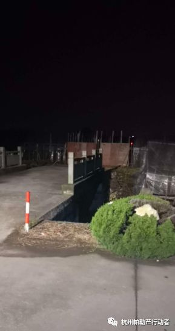 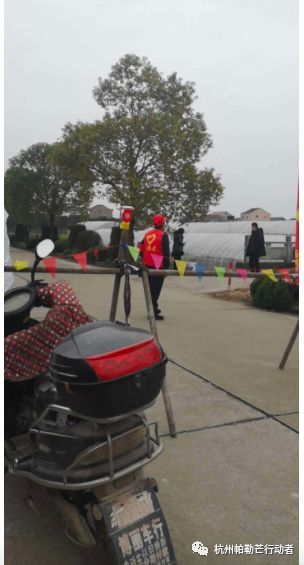
＃疫情之下的众生相
这是2月8日，我去村里卡点去站岗，（我是6点到11点假期唯一一次五点多起床 ）
图二是换岗村民已经到位，我回家休息。
这段时间除了不能外出其他对我影响不是很大最大的估计要数工作什么时候开工未知。
疫情期间跟一群的小伙伴一起学习对抗焦虑。
2020年2月10日
#疫情之下的众生相
庄士超
2月7号返回上海的路上，候车室里人烟稀少，充电桩也鲜有问津。7个小时的高铁上，静静地没一点儿嘈杂，厕所的灯也永远绿着。进了地铁，所有人起身，给行李箱让了车厢。
2020年2月10日
#疫情之下的众生相
娥老师
我除了扔垃圾出了一次门，还没出小区。从31日至今在家。我突然想到了6日，我的小区确诊了3个，4/5个同事都来问我生活还方便么。突然崩溃。现在么，寒假已经结束。每天想方设法，变着法儿做吃的，大扫除，看看书，刷剧。其实我还没太感受到无聊，毕竟31日到昨天上午都在上课。昨天下午开始放空。
2020年2月10日
#疫情之下的众生相
你的名字：木木
你现在的所在地：浙江台州
你最近的心情：一般
你目前工作/学校受疫情影响的情况：已经封村好久了，担心太晚开工，订单积压来不及
你上一次出门是什么时候：2.6.到封村口取快递，这种时候可以取快递还蛮惊讶的
你上一顿吃了什么：红枣木耳汤和梅干菜饼（早餐）
此次疫情给你带来什么特殊的体会：这次疫情中感觉Gov执行力很强，根据疫情一步步迅速升级隔离管控，一大批勇敢的医护人员毫无怨言冲在最前面，各界商会和民间自发了多次募捐紧缺采购医疗物资援助武汉医院和当地医院……（浙江把大量物资都援助湖北了，后来才发现本省也紧缺很多医疗物资[捂脸]……）特别感谢他们，真的是最勇敢最无私的勇士！！！这些都让人对疫情的控制更有信心！同时也暴露出一些严重问题，比如湖北省一些官员们的无能、傲慢和不作为，故意隐瞒事实，污蔑首批发现病毒严重性的8位医生造谣，甚至连央视都这样报道，造成疫情爆发，武汉红十字基金会的各种龌蹉，个别人发国难财，大理私自扣留其他省的口罩发给房产会成员，有些老百姓依然不听劝、不戴口罩出门聚会、隐瞒疫区出行历史…导致更多感染等等。希望通过此次疫情，能有所改变和进步，血不能白流！！！
2020年2月10号
PartA
#疫情之下的众生相
你的名字：蒹葭
你现在的所在地：浙江杭州
你最近的心情：平静地丧
你目前工作/学校受疫情影响的情况：单位进行防疫检查中，开工时间待定
你上一次出门是什么时候：2月9日
你上一顿吃了什么：火龙果、酒酿饼、蛋挞和胡辣汤
此次疫情给你带来什么特殊的体会：
自我实现的预言–最近杭州很多小区都封了，出入很严格，有些外地返工的人发微博说小区不让进，有的甚至打投诉电话也没办法解决。这种管制措施有没有危害人权就不说了，最基本的违不违法呢？前几天看微博上一个博主说我们现在真是像霍布斯描述的那样，一切人对一切人的战争。但我觉得这更像是一种自我实现的预言，当一个族群被有意无意地灌输人间险恶的观念时，也抱持着这样的观念行动时，可能最终真的就打造出了这样一个世界。
Part B：
2020年1月28日 蒹葭

那几天小区只是不让快递进门还没有限制外出。下楼去拿快递的时候听到一个狗子一直在叫，就站在看了它一会儿，期间它一直在叫，也不知道是什么情况。空旷的小区里，叫声格外嘹亮。
2020年2月10日 蒹葭
最近一到睡前几个小时就控制自己不要刷新闻了，否则整个晚上的情绪状况会变得很难控制，进入甜蜜的梦乡什么的也完全是痴心妄想。想过完全不要上网假装什么也看不见，又会觉得自己逃避了身为同胞的一份责任，心里愧疚。最近有过一些思考，隐晦地写下来吧：
1.对于真相的态度。真相是人们作出最佳应对反应、将不良后果最小化的最重要依据。以任何伪善借口为名掩盖真相都是完全不可以接受的。如果真相带来痛苦，那我们要做的是学会消化这份痛苦，而不是假装真相不存在。
2.困境中的理性与情感。我认为一定是理性优先的，全力去了解实情，预估风险，作出行动计划，反馈与修改；情感应该是自然伴生的，出了事情情感先行是本末倒置，而且会导致神智不清不利于问题解决，反而造成更大危害。
3.群体素质。昨天听到一位学者说什么样的族群产生什么样的regime，当时我一下子愣住了，觉得非常难过（此处我有一个关于regime优劣的隐藏假设）。他说对于族群智识常年的压抑，可以使得一个族群在百年间不管在纵向还是横向都出现了显著的退化，这个族群逐渐失去了发现不正常的能力、合理化一切不公。百年后，这个族群自身可能已经失去了自愈能力。
4.善良的底线。最近的封锁和一些人的流浪经历让我在想，我们都觉得自己善良，如果善良的代价是要冒自己生命的风险呢，我们还能不能善良，还应不应该善良？而为了自己的生命安全把别人的生死置之度外就真的能够保障我们的安全了吗？如果有一天变成自己是那个在外面的人呢？
5.经济安全。前几天做了黄老师的那个测试，发现我的心理状态还蛮地狱的：想着过去的不好的事，担心着未来。最近看了《小狗钱钱》的那个理财专家的书，他讲述财富观念和分摊风险的一系列投资策略（奇怪，我看什么看我又没钱），觉得对我一个以前完全没有此类观念的人是一个很好的入门。不过我发现，对于鸡蛋只被允许放在一个篮子里的人来说，躲避风险什么的实在太难。
6.Einstellung effect。当想要解决一个新问题时，习惯性试图用已有思维、在原有框架下去解决它。只要如何如何就好了、先如何如何再怎样怎样，但是很多东西在原有的程序下可能根本就无解，或至少不是最优方案，有时候最优方案还包括必须要承认接受已有的或可能的损失，但是意识到这个太难了。意识到解决问题不能靠别人、意识到自己能力和视野不足、意识到别人和外界的智慧，这些都太难了。我有过被这种思维困扰多年并且影响生活的惨痛经历，尽管我已经意识到了这点，然而在无数不自觉的瞬间，它还是习惯性的陷住我。所以我要不断警惕它、克服它。
-————————————————————————
2020年2月10日
PartA
你的名字：何红倩
你现在的所在地：杭州萧山
你最近的心情：愉快
你目前工作/学校受疫情影响的情况：在家正常办公，至少到3月9日
你上一次出门是什么时候：年前从杭州回到家后基本没怎么出门
你上一顿吃了什么：妈妈做的菜
此次疫情给你带来什么特殊的体会：虽然在杭工作，但回家的次数也不多（一年可能也就10来次，基本都是当天往返或留一晚）现在因为疫情一直待在家，我妈有天突然跟我说：自打我开始工作，这应该是我待在家最长的时间了。能够非常明显地感受到她说这话的时候是开心的。因为需要在家办公，每天把自己锁在房间，她就会不停给我送水果，还不断问我工作怎么那么忙。每次跟她说到因为疫情严重而延迟上班的时候，她一方面感到焦虑无奈，另一方面又因为女儿能够多些时间陪在身边而偷偷喜悦。而对于我而言，起初因为觉得无法回归正常工作生活而苦恼，但在家久待的舒适生活让我决定坦然接受：既然无法改变现状，那就好好享受当下和家人一起的温馨吧！
PartB
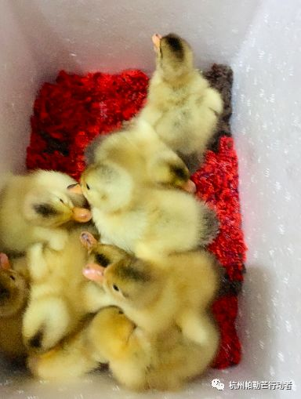
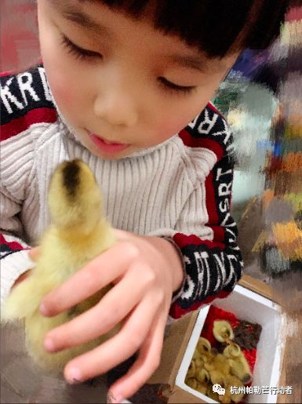
故事有点长，要从萧山人吃“活蛋”的风俗说起，但后来听我妈说，其实“活蛋”的鸭子很多都是存活率很低的，但这次的“活蛋”却是真真实实的健康的小鸭子。小伯家的亲戚是开孵化厂的，因为疫情关系，鸭子就算孵出来了也卖不出去，所以很多都直接送人了，我们家也拿到了一篮子，拿到的时候已经有很多鸭子冻死在蛋里了，但还有一部分是存活的。我6岁的侄子决定要把它们孵出来养，于是就拿了一个盒子垫了一些碎布，把那些里面还有存活的鸭子的蛋给找出来放盒子里。
本以为它们可能也会熬不过，但神奇的是第二天早上，居然看到了一群黄黄的小鸭已经孵出来了，异常活泼。我侄子称这些鸭子为“幸运儿”。然后他就这样开始了养鸭事业，每天喂给它们吃的，陪它们玩，这群小鸭子也似乎认了亲，每天跟在他后面跑。
我爸说那个孵化场因为今年的这场疫情，亏损惨重。想到这场疫情压着的不仅是生病的人，还有千千万万被疫情连累的普通人，无奈地认识到了什么叫”众生皆不易“。
-———————————————————————————-
2020年2月10日
PartA
你的名字：梁孝亿
你现在的所在地：浙江温州
你最近的心情：一般
你目前工作/学校受疫情影响的情况：最早得3月份才能回公司办公，估计得在家办公半个月
你上一次出门是什么时候：初一
你上一顿吃了什么：牛肉，白菜，海蜇
此次疫情给你带来什么特殊的体会：疫情不是最可怕的，可怕的是人内心的恐惧
PartB
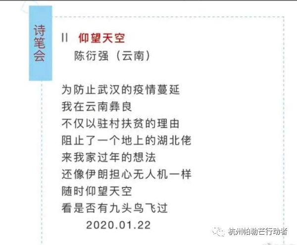
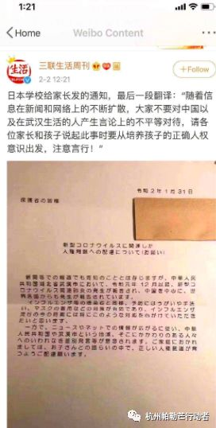
疫情愈发严重，复工时间不停推后，我也是在退票与购票之间来回操作，最后是一票难求(经过我们这里的火车几乎停运，这可能是对重灾区温州的特殊待遇吧)，回杭州的时间不定，工作的时间不定。
受疫情影响，杭州某些小区是对湖北，温州，台州等地的回杭住户一律劝返;无锡甚至对疫情感染人数比他们高的湖北，浙江，广东，河南，湖南，安徽，江西七省人员一律劝返。这让我不禁思考:就个人而言，重灾区就真的比其他地区更危险吗(毕竟其他地区也有感染，只是少一些而已)，有必要这样区别对待吗？
因为疫情，某些人对重灾区的武汉避而远之，甚至口诛笔伐，难道不应该抱有同情(可能我作为温州地区的也没资格这样说，只有其他地区的小伙伴才有资格评论)。上图是国内某些人的态度以及日本政府的态度，不是我精日，只想说日本国民教育真优秀。
-———————————————————————————-
2020.02.10
PartA
你的名字：鱼假假
你现在的所在地：浙江台州
你最近的心情：多云
你目前工作/学校受疫情影响的情况：在家正常办公，公司17号复工待定
你上一次出门是什么时候：一周前申请去街上买鼠标，（鼠标坏了），发现街上空荡荡，店铺都关着，也没有买着。
你上一顿吃了什么：麻麻烧的可口饭菜（因为昨天念叨过肯德基 麻麻炸了小鸡腿！）
此次疫情给你带来什么特殊的体会：在家每天抽出时间陪我妈妈看电视聊天，感觉我这半生陪伴父母的时间太少；休息的这两天，我把一年前买的几本书看完了，没有很浪费时间炒鸡开心，“无声告白”这本书极力推荐！！！ 与某小孩争论后，学会客观看待波动的新闻。
2020年2月10日
你的名字：王柳苏
你现在的所在地：河南南阳
你最近的心情：平静的沮丧
你目前工作/学校受疫情影响的情况：远程协作中，后续安排根据疫情发展来定
你上一次出门是什么时候：2月7日。在家宅了大半个月实在是受不了了，就骑车出门毫无目的兜风
你上一顿吃了什么：饺子
此次疫情给你带来什么特殊的体会：所谓的「想一个人静静」的需求，应该精细化一些：「天下太平的情况下，想一个人静静，且不要超过三天」……而且再次反思了自己之前想要找段时间安静的读书学习这个想法，是不是逃避其他事情的借口……
PartA
#疫情之下的众生相
你的名字：李桂英
你现在的所在地：湖北恩施
你最近的心情：正常，没有大幅度的情绪波动
你目前工作/学校受疫情影响的情况：居家办公，返杭日期待定
你上一次出门是什么时候：2月7日去地里备了一背篓🥬 白菜
你上一顿吃了什么：家常菜
此次疫情给你带来什么特殊的体会：我们应该敬畏自然崇尚科学，向奋战在一线的各位战士致敬，没有任何事情是理所当然的，没有他们的辛苦付出舍小家为大家，我便不能有这样一个安稳的春节。
PartB
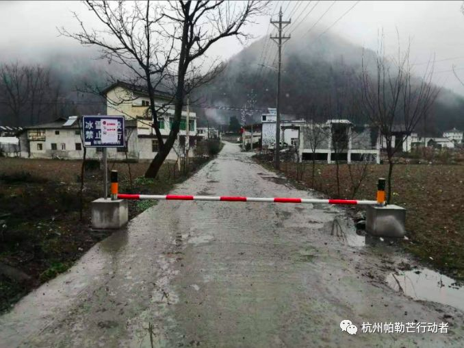

每天的疫情广播，人不出门，车不上路，基本长辈都做的很到位，当然也有很多老年人冥顽不灵，在路上行走，这个特殊的春节让我了解了很多”身边的隐形人”，感慨颇多!
2020年2月10日
PartA
#疫情之下的众相生
你的名字:Sabrina
你现在的所在地:广东吴川
你最近的心情：大部分是平静，偶尔焦虑，偶尔愤怒
你目前工作/学校受疫情影响的情况：开学延期，在家看书、看群信息、看推文、看侄子
你上一次出门是什么时候：2月7日出去买水果和蔬菜，想买口罩但药店没有，杂货店有卖两层的，我担心是假的，没买。
你上一顿吃什么:鸡肉、鸭肉、芹菜
此次疫情给你带来什么特殊的体会：对zf的瞒报、zf内的一些工作人员把捐赠的口罩拿出去卖的行为和honghui的操作感到很愤怒，zf领导觉得说出了真相就会引起社会的恐慌，瞎猜。天天刷有关疫情的信息，心情真是大喜大悲。爸妈天天看新闻关注疫情，爸爸对妈妈还是挺好的【妈妈六十大寿，爸爸出钱 哥哥们和我出力做几桌菜请叔叔婶婶们吃饭、叮嘱去深圳之后不能出去】，虽然有时候说话不那么好听。因为不能出去拜年，我家这边做年货的人损失挺大的，很多成箱水果低价出售也没人买。有一位堂姐做微商，认识很多其他村的人，线上卖车厘子、卖口罩，和店家约定一个地点去取货，堂姐就是一个中间商，每天处理的信息还是挺多的，要和左右两边的人沟通。
2020年2月10日
你的名字：丹
你现在的所在地：佛山顺德
你最近的心情：最近有点烦
你目前工作/学校受疫情影响的情况：小区封闭，外卖和快递小哥都不让进，进出大门要测体温。所以，在家再三叮嘱家里人，现在这当口可千万别感冒。
你上一次出门是什么时候：刚才。一家人要吃喝，我又不是个能含糊过日子的人，于是隔两天得去采购。昨天孩子们看了李子柒做猪脚姜，馋，于是决定做一锅。41一斤的猪蹄，我得好好炖它。
你上一顿吃了什么：鱼锅；下午茶是手冲咖啡；
此次疫情给你带来什么特殊的体会：
现在才知道自己平时贪便宜囤货的习惯蛮好的。元旦节前后大娃咳嗽，担心传染小娃，去药店买口罩，看到第二包半价，当时还有点小鄙视自己贪便宜囤些没用的。结果这点多买的口罩成了全家的宝贝。妈妈群里不时爆出的“消毒水秒杀”6，我能很淡定的回复“哦，我上个月买的三大瓶套装还有两大瓶。你们要不要，匀点给你们？”
邻居群里、家长群里的防疫焦虑和各种打卡调查，简直就像一道催眠符。我的时间本来就让这家里的三餐，管孩子的各种事件打得稀碎！偏偏还有这样那样的打卡和调查来问我同样的信息，消耗我宝贵的时间。
乌合之众，难得糊涂。我本来想当只快乐的猪，却不小心听了孤阅的课，唉~
2020年2月10日
你的名字：徐镇琦
你现在的所在地：浙江余姚
你最近的心情：焦虑和淡定交替
你目前工作/学校受疫情影响的情况：工作受到疫情影响很大，目前临时的安排是值一天班休息四天一个周期直至恢复正常。
你上一次出门是什么时候：就在刚刚
你上一顿吃了什么：红烧肉和年糕
此次疫情给你带来什么特殊的体会：这次疫情情况很严重，比03年的严重，由于我们市区也有人查出感染所以全市禁严，出入小区每天都要量温度，社区发放通行证，一户一天出门一次。由于我是做酒店工作的，所以对卫生和安全问题比较重视，公司也要求自带餐具，饭菜去公司食堂打。又因为最近阴雨连绵所以心情一直都很不好，不知道疫情什么时候能够好转，作为一个普通人，没有什么能帮上忙的，最近经常听到这么一句话：疫情期间保护好自己不给国家添麻烦就是做贡献。我现在只有一个想法：希望专家们能够尽早的克服难题，让国家早点恢复元气。
2020年2月10日
Part A
#疫情之下的众生相#
你的名字：楼婧如
你现在的所在地：浙江诸暨
你最近的心情：感动，昨天团队小伙伴帮我策划了一个20几年来很特别的生日，她们说：“上班会迟到，生日祝福不会迟到。”
你目前工作/学校受疫情影响的情况：在家办公，至少到3月9日
你上一次出门是什么时候：昨天，和姐姐在家门口打羽毛球
你上一顿吃了什么：妈妈牌炒饺子
此次疫情给你带来什么特殊的体会：
1 家里的中老年人真的很顽固，20号开始就在微信里，面对面每天播报疫情的严重性，大年初一晚上家里还来了一大批亲戚。亲戚走后，和我姐一顿痛骂，第二天就给其他亲戚打了今年春节不往来的电话。
2 活着真好。
PartB

一直呆在乡下，每天享受爸爸做的美食，饭桌上大部分蔬菜都是自己家地里挖来的，每天在pyq看到有人抢不到菜时，此时觉得有地真好啊😂所以才说要不要给国寄点菜
2020年2月10日
PartA
#疫情之下的众生相
你的名字：黄敏敏
你现在的所在地：浙江绍兴
你最近的心情：情绪起伏不定(我一直都这样😂)
你目前工作/学校受疫情影响的情况：居家办公，返杭日期待定
你上一次出门是什么时候：2月8号，去小区门口拿超市外卖
你上一顿吃了什么：大白菜、萝卜，跟着我妈吃素
此次疫情给你带来什么特殊的体会：
1.疫情这几天是近年来我跟父母相处时间最长的一次，很难得，心里还挺开心的，时间一天天流逝，家人更珍贵了。
2.之前认识的一位写作老师和武汉当地朋友组建了一个志愿者团队，帮助那些受感染重病但无法及时住院的病人。看到他们发的志愿者日志，一方面为求助的病人如此之多感到恐慌，另一方面非常敬佩这些做实事的志愿者。因为时不时要远程办公，我虽很想线上帮忙，但又怕时间冲突而放弃，有点小难过。怎么说呢，突然间觉得人人都可以做点什么。
2020年2月10日
PartA
你的名字：吴丽颖
你现在的所在地：浙江义乌
你最近的心情：日常丧
你目前工作/学校受疫情影响的情况：推迟线下上班，线上上班。
你上一次出门是什么时候：2.10小区内跑步
你上一顿吃了什么：鱼🐟
此次疫情给你带来什么特殊的体会：
在疫情期间我做不了物质上和体力上的贡献。在岁月不静好的情况下当了条咸鱼也是万万没想到的。希望疫情快点结束🔚。希望2020多一些好消息，要不就不要有消息。震惊于人们疯抢双黄莲乃至月饼🥮，感动于河南某贫困县和云南某寨子人们捐蔬菜和水果🍌的行为（还有许多未被看见的善行）
PartB
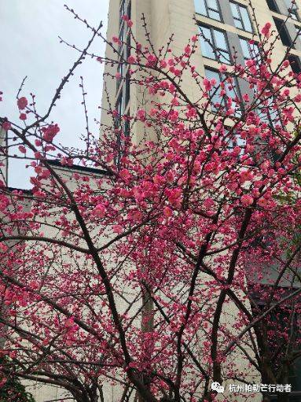
出门跑步🏃♀️都很开心，因为梅花开，而且释放的香味可以被我闻到。
在疫情期间，我的guilt time很多，刷微博和微信居多。起床较迟。这两点需要深刻反思。
开启🔛反思之旅（感觉这是我要在高效群里做的事…）
1.为什么会去刷微博：因为想去看看有什么新消息，可以是已关注大V的新推文，或是疫情的具体情况和以数据形式和非数据形式记录的患者。被用来“围观世界”的微博操作方便和没有那么多的文字的两个特点可能是我选择以它来“围观”的原因吧。
2.起床迟。天气冷，没有外界push，睡的迟。我为什么睡觉迟呢？因为白天的事没做完，就到晚上做，然后恶性循环。
不知是否清晰的把自己的问题写在这里。看到了许多高效群伙伴的日结，执行力超级强，让我感受到了榜样的力量！疫情期间看到豆瓣小组有一个口罩哨兵的志愿者活动，觉得这个自己可以做便加入了。一直都是处在待命状态。
写了半天，发现自己写不了抒情也写不了议论（日常无奈…）最后给了自己一道思考题…疫情起源，发展至现在，我与我妈的交流可以体现出我妈和我怎么样的科学观呢？
2020年2月10日
Part A
#疫情之下的众生相
你的名字：彭佳佳
你现在的所在地：浙江温州
你最近的心情：平静
你目前工作/学校受疫情影响的情况：开学推迟到至少3.2号
你上一次出门是什么时候：1.25号早晨一家人去超市大采购
你上一顿吃了什么：榴莲披萨烤翅薯条
此次疫情给你带来什么特殊的体会：我从未想象过，我会每天早上被准备好的早餐叫醒，一家人围着餐桌一边谈论着新闻一边吹着烫口的豆浆。一年开一次火的厨房，每顿都有热气腾腾的鱼肉蔬菜和为我盛好的热汤。正餐的间隙，是洗净的樱桃、切好的苹果、浓郁的花生汤。
哪怕出现在梦境也会因为过于虚幻被我一眼识破的场景，竟真实地发生着。
我以为自己不期待也不需要的亲情，原来没有那么糟糕。
Part B
#疫情之下的众生相
自1.25号超市回来后，我便一直安分守己，丝毫没有出门放风的渴望
每天大部分的时间，就是坐在这张书桌前，白天的生活节奏是“吃饭、学习”的交替循环。

念叨了一年的除夕烟火和跨年夜，以及自高中以来，已成惯例的初一八人局，都因为一只蝙蝠而无奈取消。
群里是无聊焦躁的哀嚎，朋友圈里是按捺不住的蠢蠢欲动。但我的心情似乎并没有受到什么影响。
相反，被封印的世界，仿佛时空凝结，给了我莫名的安全感。
心境合适，时机正好。关上房门，坐回熟悉又久违的书桌前，我开始翻看过去的一切——列下的计划，备忘录里的思索，墙上的文字……一字一句，真实而遥远；我开始回想这五个月来经历的一切——走过的路，认识的人，惊喜与苦涩交错的情节……一件一件，从头到尾。
看了许多，想了许久，我终于不得不承认，这大半年来，自己做了许多蠢事，彻底偏离了方向。
我以为我足够理智清醒，却不过一直在为自己的荒唐辩护；我以为我可以游刃有余，却一而再地向错误的路径偏离。我想起了自己油盐不进地争辩时，某人恨铁不成钢的表情，我想起了核聚的告诫、小绿的相劝。
……
我好像，突然明白了自己郁郁寡欢的原因。
该结束的事情结束，该厘清的东西厘清，于我而言，禁足反倒创造了理想的条件。在这些不被打扰的日子里，在这张书桌前，一点一滴地，理顺自己，纠偏、止损，摸索前进。
2020年2月10日
Part A
你的名字：银珠
你现在的所在地：山西吕梁
你最近的心情：70%平和，20%狂躁，10%低沉
你目前工作/学校受疫情影响的情况：除了不能随意出门，并没有影响到什么，反而很享受。
你上一次出门是什么时候：大概5、6天前，去500米远的哥哥家。可能是因为小县城或者我都挑没什么人的时候出门，所以基本还是一个礼拜会出门一次的。
你上一顿吃了什么：上一顿包子。有爸妈在家，每顿都是家常饭，拉面、饺子、火烧、火锅，大米，当然还有专门为过年屯的肉和菜，感觉没有亏待了舌头。除了刚刚回家那几天，因为家里的饭菜清淡，又特别馋香辣香辣的大盘鸡，这在北京不好找，就想着回家满足一番，结果街上店铺全关着，实在忍不住了，“偷偷”路过超市的时候买了袋香辣味的方便面，说偷偷是因为妈妈说超市人多不安全不建议我去，但是还是想回家煮了解解馋，哈哈。
此次疫情给你带来什么特殊的体会： 跟家人好好相处。北漂了半年，第一次半年没回家，这次疫情算是一次大型的休养期，按照自己的计划学习、陪侄子玩，安排学习计划、锻炼运动、尝试新的东西，更重要的是，难得一家人都呆在家，玩丢手绢、捉迷藏、拔萝卜、搭积木、聊聊小时候的故事，好好跟爸妈相处。
Part B

2020/02/08 元宵节 在家 妈妈和侄子
春节的串灯，窗外星星点点的烟火，在这个很不热闹的节日显得格外有气氛，白天学习，中午团圆饭，陪侄子玩一会儿，晚上完成了线上分享，这是很满意的一天。
2020年2月11日
Part A
#疫情之下的众生相
你的名字：邹立杰
你现在的所在地：浙江温州
你最近的心情：平和
你目前工作/学校受疫情影响的情况：已经开始远程办公
你上一次出门是什么时候：前天陪老妈去池塘洗衣服
你上一顿吃了什么：自制菜包 + 老干妈
此次疫情给你带来什么特殊的体会：
对父母认知会发生改变，原以为到了那个年纪时间会更多的花在照顾子女身上，至少在我现有的观念中这样的生活该是多无趣的；但父母因常去教堂的缘故，他们早已有了对应的生活圈子，夫妻俩每天各读几章圣经然后到群中打卡，偶尔晚上参与线上分享，学学唱唱诗歌，想想也是蛮好的。应该幸好有这次的疫情，能够让我看到爸妈也有这样的变化。PS：昨天在我的帮助下，他俩追完了一直想看的电视剧。当然这也给了我超多陪他俩的时间咯~
至于自身而言，可能这是度过最漫长的假期了吧，买了超多超多次的回杭车票，每当收到停运的短信的那一刻，又默默退掉。虽说心里还是向往远程办公的状态，毕竟待在这里的房间里，代码敲累了可以随手看书或是看到搞笑视频也没有什么压力，但同时因时间界线变得模糊，一周都充当客服的角色，但事情其实超级超级少，做完了就可以安排自己的事情，这是一件很开心的事。
2020年2月11日
Part A
#疫情之下的众生相
你的名字：海燕
你现在的所在地：内蒙古通辽
你最近的心情：平静+盼望回家
你目前工作/学校受疫情影响的情况：本是自由职业者，对我没有影响，不过之前想的2020年的创业项目要重新思考重新筹划。
你上一次出门是什么时候：1月29，去看父母
你上一顿吃了什么：凉皮
此次疫情给你带来什么特殊的体会：
向死而生
也许是因为蒙古族，家里父母对生死比较看得开，我也因此对生死看得淡一些。我妈说过，该是火烧死的，绝对水淹不死，虽不信但我觉得也有道理，因为有太多解释不了的生死。我的理解是，有生有死，每个人都会死，只是时间早晚的问题。不过作为妈妈还是会格外焦虑些，经常想怎样能保孩子们平安。
每每看到孩子们天真的笑容，总会感动，生活是美好的。特别敬佩逆行者们，TA们是真正的勇士，致敬!
Part B

这是我每天看到的窗外世界，日日看，除了光线、几个人、几辆车外，每天没什么变化。昨天试着打开窗户，大口呼吸了新鲜空气，闻得到的冷，冷得干脆。每日阳光明媚、天空湛蓝，却只能蜗居家中，总有种不真实的感觉。好在家里伙食很好，财源滚滚中的“圆滚滚”已然实现。
最近总觉得快好起来了，看看虽然病患依旧激增，再看看死亡率，也有很多治愈的，就没那么慌了。也许以后会面临更多未知病毒，没有特效药，身体健康，自身免疫力才最可靠，所以大家一定要照顾好自己。
2020年2月11日
PART A
你的名字：任聪
你现在的所在地：浙江杭州
你最近的心情：偶尔平静，偶尔烦躁（被娃搞的）
你目前工作/学校受疫情影响的情况：同事们在家办公，我目前还在休产假
你上一次出门是什么时候：隔3天左右会到小区门口取一次菜，菜场送过来的。上一次离开小区是在1月29日，全家实在憋坏了，开车去湘湖兜风。在湘湖100米大概能碰到10多个游人，都戴着口罩。
你上一顿吃了什么：韭菜炒肉、烤鸡翅、香菇炒洋葱。
此次疫情给你带来什么特殊的体会：
我绝对不适合做全职太太！
以前家人都说我对娃特别有耐心，现在才知道，是因为以前大部分时间在上班，陪娃的时间有限，所以有耐心。这次陪娃待了快1个月，几乎天天都会发脾气。
4岁的小娃天天关在家里，洪荒之力无处释放，真的很闹腾。优秀事迹比如：把衣柜里的东西全掏出来，用尿不湿把妹妹埋起来。
但是娃有时候又很温情。有一天睡前给他讲《亲爱的小鱼》，一本母子情深的绘本，听完他竟然哭的很伤心，一边哭一边说：“等长大了（离开你了）我会想你的”。
我的小魔兽，真是拿你没办法！
PART B
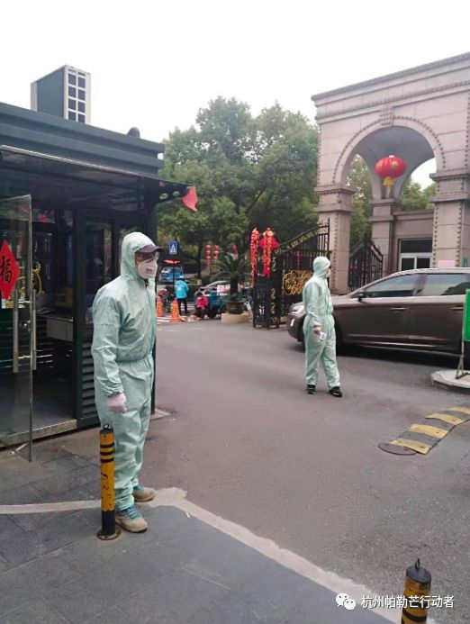
这是小区保安。他们只是临时工，但仍无怨无悔地坚守着岗位，在这特殊时期做着平凡却危险的工作。向他们致敬。
2020年2月11日
你的名字:刘亚冲
你现在的所在地：湖南长沙
你最近的心情：有点小焦虑
你目前工作/学校受疫情影响的情况：同事们轮流上班，隔壁师范空的很
你上一次出门是什么时候：刚刚吃了晚饭后带着口罩在小区里面走，没几个人，大家都戴着口罩。
你上一顿吃了什么：土豆炒肉，鸡血菜
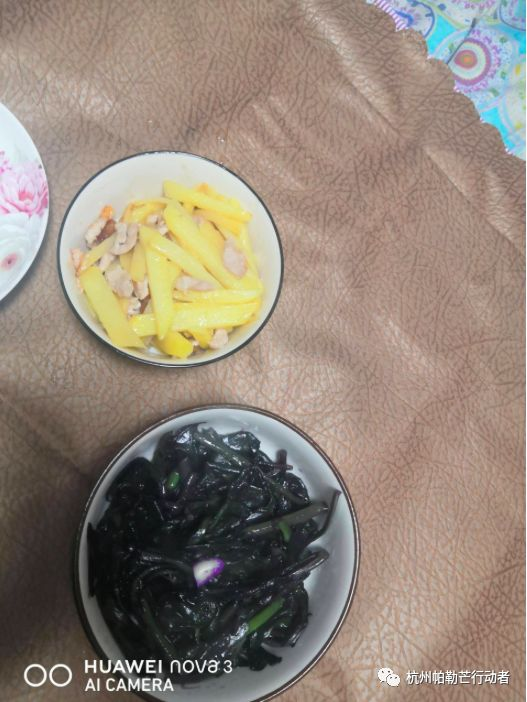
此次疫情给你带来什么？
医院很重要，人还是比较多的，附近还买不到口罩，到处量体温，很多门都关了，出行没有以前方便。小区也管的很严不许快递外卖进来，今天才收到过年后的第一个快递，至于外卖，听说有外卖小哥吐口水后再没买过。最近听了很多感人的事，也听了很多让恶心的事，整个长沙的好医生基本都去了一线，生不起病，注意身体。
PART B

外面都是空的，没人，买东西只能去超市，超市大概8点关门。今天我去问了一下，很多货物都是年前准备的，工厂不开厂，货很多都没有了，我买单时犹豫了一下备包汤达人。

2020年2月10日
part A
#疫情之下的众生相
你的名字：石磊
你现在的所在地：浙江杭州
你最近的心情：一般，跟平时区别不大
你目前工作/学校受疫情影响的情况：在家正常办公，至少到3月17日
你上一次出门是什么时候：正月初四，出门买药买零食
你上一顿吃了什么：烧面片，加了老干妈
此次疫情给你带来什么特殊的体会：
年前疫情开始初期，口罩被抢购一空，当时有些不齿，就没有随大流去抢口罩，然而到现在已经买不到了，有点懊悔。
过年回家取消了拜年，没想到爸妈也这么开明，在家住了4天，每天都跟爸妈待一起，他们烧的饭，我负责吃就行了，这种待遇小时候都没享受过，甚至有点感谢疫情，这个春节给我们全家一个自己的生活，繁琐的拜年任务没了似乎没什么遗憾，所以为什么每年都要花好几天时间去重复重复的见亲戚吃大桌饭呢？
第一次感受到这种全民戒备的社会现象，口罩买不到，没法出门，甚至开始忧国忧民了，担心中国经济，担心物价。
最后很想给自己理个光头，这个想法已经蹦出过好几次了。
part B

没想到爸妈这么贪玩，三个人打牌不亦乐乎，是不是发出阵阵笑声，臭骂声，甚至玩到凌晨1点，要知道爸妈平时都是要4点起床的= =！妈妈说大概十几年没玩牌了，细想觉得有点心酸，生活不易，我年长了，妈爸却是已经步入花甲。
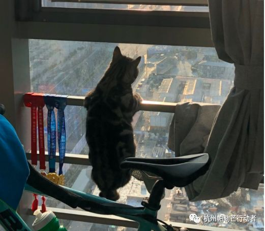
拜疫情所赐，天天在家陪着猫（财哥），大部分时间他都在睡觉，偶尔跑酷，偶尔淘气（咬盆栽，跳灶台），有时候就直勾勾的盯着我，而我总是对着电脑或手机，有时候觉得财哥挺无聊的，天天都窝在家里，如果有点选，他也会去外面撒泼吧？但又想毕竟子非猫，也就释然了。
———————————————————————————
2020年2月11日
Part A
你的名字：絮
你现在的所在地：江西景德镇
你最近的心情：还行
你目前工作/学校受疫情影响的情况：在家正常办公，目前至少到3月1日
你上一次出门是什么时候：2月8日从老家回自己家
你上一顿吃了什么：芹菜炒肉，西红柿蛋汤，黄瓜
此次疫情给你带来什么特殊的体会：社会正常运行原来需要那么多力量在维持，感受我国zf的强大，有过恐惧，慢慢变淡然，平常心处之，做好自己能做的。
Part B
一月中下旬的时候出了趟远门，一直到一月底觉着该过了潜伏期了，才放下心来。往年亲戚之间总要走动走动的，大家也都非常有默契的没有提拜年的事情了。期间父母出过一次门，把我担心坏了，特地开了车去叮嘱他们别出门。给他们从网上定了高价的口罩寄过去（那时候还有的卖）。
特别有意思的一件事是，以前总是父母唠叨孩子不听大人的话，这次大多是孩子唠叨父母让人不省心。不要出门，不要聚集，别去拜年了。但是貌似长辈们刚开始觉得没关系，不会有事的。而且街上出来走动的基本上都是上了年纪大的人，戴着口罩，鼻子和嘴巴都在外面，再仔细一看他正在抽烟。
爱人要上班，过完年从老家回到自己家里，进市区之前每个人都要测体温，检查身份证，我因为户口没迁过来，还被盘问了一番，说让以后拍上户口本，可我户口本也不是本市的，爱人说得拍结婚证才行。回来小区已经是封闭式管理了，不过直到昨天才有人值守，每户两天可以出去一个人。采购的大旗已经交到爱人手上了，每天他回来鞋底要喷酒精消毒，自己一个人住一间房，碗筷分开，每餐都会消毒，在家里都会戴上口罩。（很奇怪添加不了图片）
希望疫情早日过去，回到正常的生活，毕竟小孩想念小伙伴们了，我也开始想念正常出门的日子。
2020年2月12日
Part A
你的名字：君龙制衣
你现在的所在地：河南郑州
你目前工作/学校受疫情影响的情况：没有什么影响
你上一次出门是什么时候：农历12月29
你上一顿吃了什么：油菜素馅包子
此次疫情给你带来什么特殊的体会：这次疫情让我们的亲子关系和谐了
原文链接 备份链接 摘要：本文为“2020，我们的生活在继续”征文大赛的投稿作品。2020年，本来是计划中作为人生转型的一年。疫情一来，一切都变成了问号。 随着不能出门的日子越来越长，我的失业焦虑也愈发严重。 时至今日，已经是我在家中无 …
原文链接 备份链接 ***************************************▲*************春节前，日本生活空间nikoand在上海开设全球最大旗舰店，开业当天，成百上千的消费者在淮海中路分批排队，预计等 …
原文链接 备份链接 1月23日武汉封城前，有近70万黄冈人从武汉返乡，并带回新冠疫情。这些返乡人员分布在黄冈市下辖的10个县市区。 其中一个人口百万的县，确诊病例数在全市排名靠前。曾在武汉出现的床位紧缺、物资告急、病毒检测困难，在这座 …
原文链接 备份链接 这题来自Voicer，他们采访了包括我们在内的6位创意行业内不同分支的同侪，分享了这次疫情对他们的影响以及他们相应的思考和应对策略。 深度专访：疫情之下的创意从业者，你们还好吗？ 而在这个心情极其复杂的超长春节里，我 …
原文链接 备份链接 新冠疫情爆发以来，武汉市已征用50家医院作为定点医院，很多非新冠病人要么在治疗中被清理出院，要么在疫情期间发病，面临就医困难。 8个月大的陈锦媛，身患罕见先天性心脏病，急需手术，父母驾车千里“突围”，送她到北京，但 …